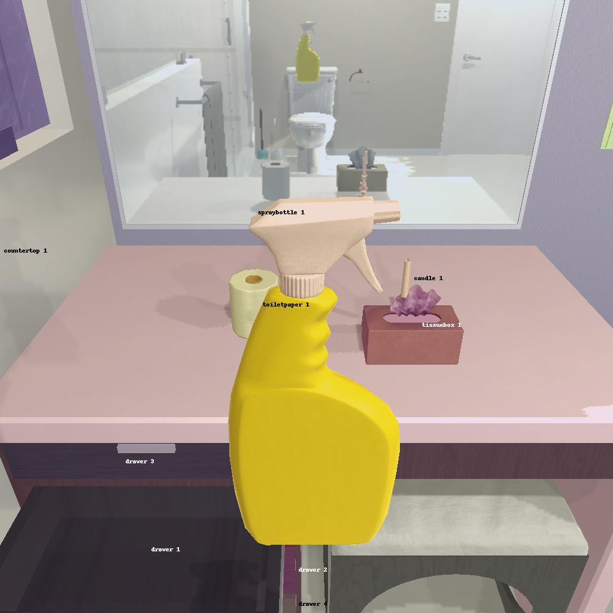

---------------------------------------------------------task: 28---------------------------------------------------------
--------------------------------------------------------------------------------------------------------------------------------------------------------------------
--------------------------------------------------------------------------------------------------------------------------------------------------------------------
Step:--------------------------------------------------------------------------7-------------------------------------------------------------------------------
----------------------------------------
VLM Prompt:
Image1:
**Instruction**
1. Analyze the provided image to identify all visible household objects, focusing on those relevant to the task description "find two spraybottle and put them in toilet."
2. Use the analysis of the image and the task hint "The agent must find an object of the desired type, pick it up, find the correct location to place it, put it down there, then look for another object of the desired type, pick it up, return to previous location, and put it down there with the other object." to answer the question: what is the most reasonable action in the choices for the task description "find two spraybottle and put them in toilet"?
4. Decide and write the answer using the template: The answer is: (i): , where i is the real number. If there is no desired object in the image, search every place based on **Initial Observation** to find the object. And if no one is exactly correct, choose a similar answer.
**Initial Observation**
You are in the middle of a room. Looking quickly around you, you can see bathtub (1), bathtubbasin (1), cart (1), sink (1), garbagecan (1), sinkbasin (1), countertop (1), drawer (1-4), toilet (1), toiletpaperhanger (1)
**Answer Choices**
(1): go to bathtub 1
(2): go to bathtubbasin 1
(3): go to cart 1
(4): go to sink 1
(5): go to garbagecan 1
(6): go to sinkbasin 1
(7): go to countertop 1
(8): go to drawer 2
(9): go to drawer 3
(10): go to drawer 4
(11): go to toilet 1
(12): go to toiletpaperhanger 1
(13): open drawer 1
(14): close drawer 1
(15): put spraybottle 1 in/on drawer 1
(16): examine spraybottle 1
(17): examine drawer 1
**Answer**
Let's think step by step by following the instructions.
----------------------------------------
----------------------------------------
Original Response:
First, we need to identify the spray bottles. In Image 1, we can see one spray bottle labeled "spraybottle 1" on the countertop. Since the task description asks for two spray bottles, we need to find another one. Based on the Initial Observation, we haven't been given any information about the second spray bottle's location, so we may need to search for it.
The most reasonable action, given the task description "find two spraybottle and put them in toilet," would be to first go to the location of the visible spray bottle. Therefore, the next action should be:
The answer is: (7): go to countertop 1
After reaching countertop 1, the agent can pick up "spraybottle 1" and then search for the second one, which may involve checking the drawers or other locations. Once both spray bottles are found, the agent can proceed to put them in the toilet as per the task description.
----------------------------------------
----------------------------------------
>>> Refine Original VLM Response and Get Pure Action: go to countertop 1
After reaching countertop 1, the agent can pick up "spraybottle 1" and then search for the second one, which may involve checking the drawers or other locations
----------------------------------------
-----------------------------------------------------------------
Running time: 19.070549726486206 seconds
Total Money: 10.139820000000007
-----------------------------------------------------------------
-----------------------------------------------------------------
Text Observation:Nothing happens.
-----------------------------------------------------------------
UNSUCCEED